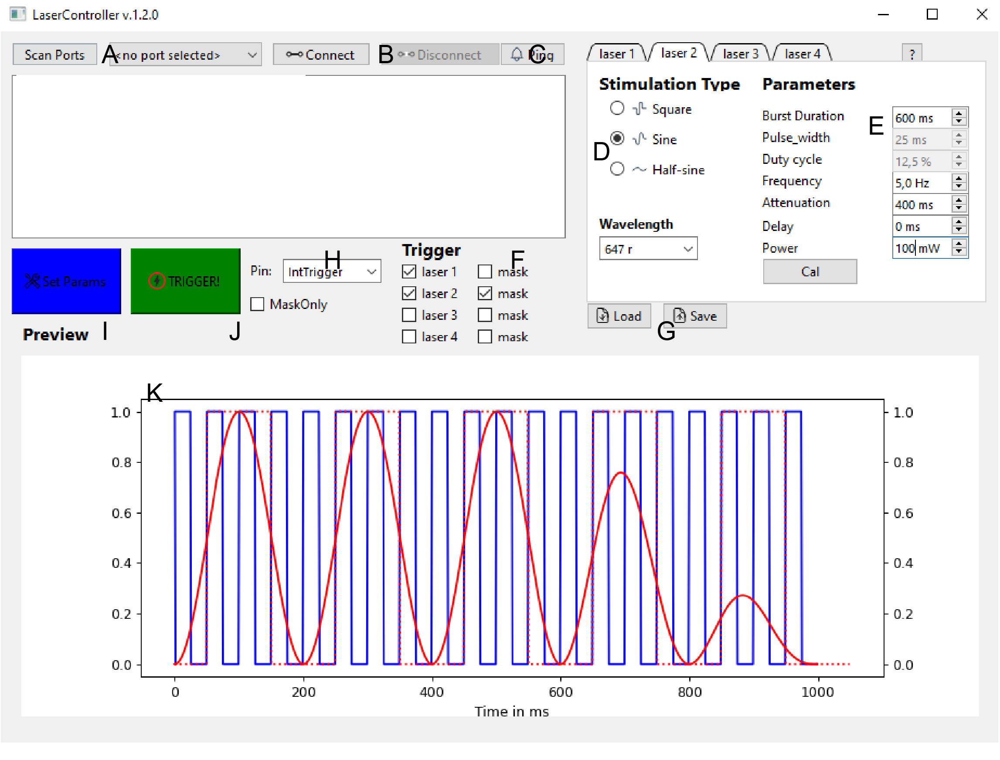

GUI overview¶
We provide a GUI based on Python and PyQt6 which allows setting the parameters and visualizing the resulting stimulation patterns.
Run¶
To start the GUI, run the following command:
python FreiCtrl_laser/GuiLaser.py
Overview¶

A: Scan serial ports. Choose the data-serial port of the pico from dropdown. Under Linux typically ttyACM1, windows some COM-port.
B: Connect/disconnect to the chosen serial port.
C: Ping board. Sends a echo request, turns green if board responds.
D: Per laser parameters. Waveform options, wavelength determines the visualization color.
E: Various parameters of the stimulation. Soem options are only available for specific stimulation waveforms.
F: Choose active lasers and/or masks
G: Save/load settings to/from file.
H: Dropdown of the trigger-input channel.
I: Send current parameters to the board.
J: Send software trigger signal to the board. This will trigger laser stimulation according to parameters set before!
K: Visualization of the current parameters. Filled line indicate the laser output and skipped lines the mask.